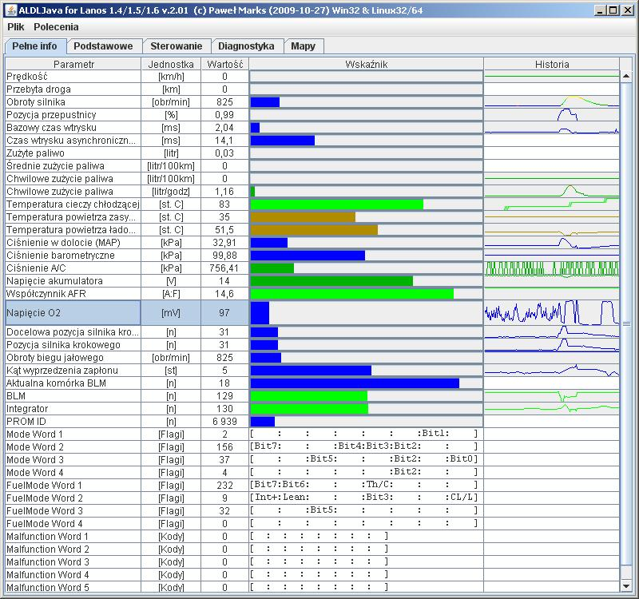
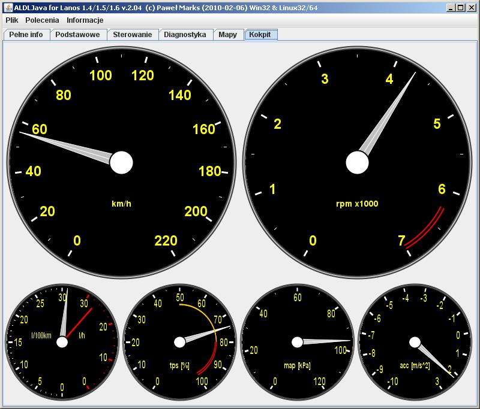

(c) Paweł Marks, 2020
Czym jest ALDL? W telegraficznym skrócie jest to standard komunikacji z modułem sterującym silnika.
Niniejszy projekt jest programową realizacją narzędzia diagnostycznego ALDL dla samochodów Daewoo Lanos/Nubira 1.4, 1.5, 1.6.
Oprogramowanie diagnostyczne jest nieocenioną pomocą podczas diagnostyki wszelkich problemów z silnikiem (szarpanie itp.).
Zamiast wymieniać na chybił-trafił kolejne elementy silnika, lepiej jest dokonać stosownej diagnostyki programowej aby szybko i precyzyjnie znaleźć
przyczynę problemów.
Dla tych, którzy mają jakieś pytania, powstał FAQ
Aplikacja napisana w Javie pozwalająca na dostęp do ogromnej palety parametrów ukrytych w sterowniku silnika samochodu (ECU).
Pozwala podejrzeć:
- prędkość obrotową silnika,
- prędkość samochodu,
- czasy otwarcia wtryskiwaczy,
- wszelkie ciśnienia (powietrza, czynnika w układzie klimatyzacji) i temperatury (cieczy chłodzącej, powietrza zasysanego),
- napięcie w instalacji, napięcie sondy lambda,
- pozycję przepustnicy, i inne
Ponadto program wyznacza przejechany dystans, zużycie paliwa (sumaryczne i średnie).
Jest to bardzo przydatne narzędzie podczas diagnostyki problemów z silnikiem.
Aby uzyskać połączenie z ECU konieczny jest odpowiedni interfejs pośredniczący między portem RS232 a sterownikiem silnik. Można go zakupić chociażby
na Allegro, lub wykonać za grosze samodzielnie.
Przykładowy zrzut ekranu:


v.2.08: Poprawiona obsługa błędów podczas instalacji licencji. Aktualizacja adresów serwerów wymaganych do poprawnej obsługi licencji.
v.2.07: Zwiększenie dokładnośći pomiaru czasu w systemach Windows. Wprowadzono powiadamianie o nowych wersjach aplikacji.
v.2.06: Uproszczenie sposobu instalacji pliku licencji. Teraz można go wyklikać w okienkach.
v.2.05: Usunięcie błędu odtwarzania logu przy braku dostępu do portu szeregowego.
v.2.04: Wizualizacja deski rozdzielczej.
v.2.03: Informacje o programie, aktualnej konfiguracji oraz licencji.
v.2.02: Badanie statystyczne przebiegów sondy lambda. Zakładki dostępne w wersji pełnej dostępne w wersji DEMO, jednak z ograniczoną funkcjonalnością.
v.2.01: Dodano odtwarzacz logów, oraz możliwość sterowania pracą silnika w pętli otwartej/zamkniętej
v.2.00: Opracowanie pełnej instrukcji do programu, sterowanie parametrami silnika, kasowanie kodów usterek, reset BLM etc., rozszerzona diagnostyka (analiza dynamiczna parametrów ECU), prezentacja mapy benzynowej, logowanie XML
v.1.50: Wprowadzona została możliwość definiowania reguł dekodujących ramkę danych ECU w pliku konfiguracyjnym
v.1.40: Zmieniona biblioteka komunikacyjna z portem szeregowym. Zastosowana została biblioteka RXTX
v.1.32: Poprawiona obsługa przelotek USB-RS232 pod Linuxem oraz błąd w logowaniu (również pod Linuxem)
v.1.31: Możliwość logowania w trybie RAW
v.1.30: Dodano wstępną obsługe silnika 1.5
- maszyna wirtualna Javy SUN/Oracle JRE 1.5 lub nowsza,
- system operacyjny Windows 2000/XP/Vista/7/8/10 32-bit lub Linux 32/64-bit,
- 256MB RAM, 10MB HDD,
- karta graficzna zapewniająca rozdzielczość ekranu co najmniej 800x600 (zalecane co najmniej 1024x768),
- port szeregowy zapewniający pracę z prędkością 8228bit/s lub inny interfejs realizujący połączenie pomiędzy portem szeregowym a linią sygnałową ALDL w samochodzie
Instrukcja obsługi (0.4MB)
Skaner ALDL-Java v.2.08 (2012-04-26) dla Windows/Linux (3.5MB)
Licencja dostarczana w pliku ZIP, który można pobrać z tej strony, pozwala wykorzystać tylko część możliwości programu,
ograniczając jego funkcjonalność do przeglądu parametrów pracy silnika i możliwości zarejestrowania pliku logu o ograniczonym czasie trwania.
Pełna wersja programu oferuje (pełny opis zawiera instrukcja obsługi):
- możliwość sterowania parametrami pracy silnika (nawet wieloma równocześnie),
- dynamiczną diagnostykę wykrywającą to, czego nie raportuje ECU w kodach błędów, a co można wykryć analizując zmiany odczytywanych parametrów,
- prezentację mapy benzynowej, której zawartość może pomagać w ocenie stanu silnika i diagnozowaniu przyczyn jego nieprawidłowej pracy.
Czy warto zapłacić za program? Policz ile kosztują wizyty w autoryzowanych stacjach serwisowych (ASO), ile wart jest Twój czas spędzony na poszukiwaniu
dlaczego silnik szarpie, albo brakuje mu mocy, a zwykle kiedy pojedziesz do ASO, wtedy wszystko pracuje jak należy.
Czy warto? Na to pytanie musisz odpowiedzieć sobie samodzielnie.
Aby dokonać zakupu pełnej licencji należy wypełnić skontaktować się z firmą VIAKEN i dokonać zakupu.
Link na skróty: Pełna wersja ALDLJava.
TAK. Program ALDLJava współpracuje z każdym typem portu RS232, który jest dostępny w systemie Windows/Linux i do którego jest dostarczony standardowy sterownik. Program nie odwołuje się bezpośrednio do portów sprzętowych układu UART, tak jak robią to np. programy przeznaczone dla systemu DOS. Dzięki komunikacji za pośrednictwem sterownika, program jest w stanie obsłużyć każdy rodzaj portu szeregowego. Warunkiem aby dany port mógł być użyty do komunikacji z ECU jest możliwość ustawienia wymaganej prędkości transmisji, na co pozwalać musi zarówno część sprzętowa portu jak i sterownik.
NIE. Zmiany wprowadzone przez złącze ALDL (poza niektórymi wyjątkami) są tylko chwilowe.
Przykładowo, po jednorazowej po zmianie obrotów biegu jałowego wrócą one do ustawień domyślnych już po kilku sekundach.
Jednak ALDLJava podczas działania realizuje pseudo-trwałość wprowadzanych ustawień poprzez cykliczne przypominanie wprowadzonych parametrów.
W uproszczeniu, dopóki program działa, parametry silnika będą zmienione.
Wyjątkiem od tej reguły jest kasowanie kodów usterek i reset komórek BLM. Te zmiany są trwałe.
Nigdy nie ma 100% gwarancji. To czy program będzie współpracował z samochodem zależy od posiadanego interfejsu oraz portu szeregowego.
Jeżeli interfejs gwarantuje współpracę z programami takimi jak EFILive to jest 99% szans, że będzie poprawnie współpracował z programem ALDLJava.
Co do portu szeregowego, to jeżeli jest po port sprzętowy na układzie UART, a takie są zwykle montowane na płytach głównych lub kartach PCMCIA,
to komunikacja nie powinna sprawić żadnych niespodzianek. Jeżeli zastosowana zostanie przelotka USB-RS232, to wiele zależy od przelotki
i dozwolonych przez nią prędkości transmisji danych. Czasem ograniczenia przelotki można ominąć stosując odpowiedni interfejs pośredniczący
w komunikacji RS232-ALDL.
Aby upewnić się przed zakupem wersji pełnej, czy program będzie działał poprawnie, należy pobrać darmową wersję demonstracyjną i wypróbować ją.
Absolutnie niczym. Elektrycznie z punktu widzenia gniazda diagnostycznego komunikacja ze sterownikami silników 1.4, 1.5 i 1.6 przebiega dokładnie tak samo. Różnice występują w interpretacji przekazywanych danych, ale to już jest zadaniem programu ALDLJava. Jeżeli interfejs współpracuje z silnikiem 1.6 to na pewno zadziała również z silnikiem 1.5, o ile posiadane oprogramowanie (tu ALDLJava) z takim silnikiem potrafi się porozumieć. Interfejsy oferowane między innymi na aukcjach internetowych często mają w opisach informację, iż nie współpracują z silnikiem 1.5. Uważam, że wynika to z faktu, że często powołują się na fakt współpracy z silnikami przy pomocy programu Efilive 4.0, który nie wspiera silnika 1.5. Jednak ALDLJava poprzez taki intefejs powinien bezproblemowo porozumieć również się z silnikiem 1.5
Zależy to od posiadanego interfejsu. Komunikacja z ECU przebiega z prędkością 8192bps (bitów na sekundę). Zwykle takiej prędkości nie obsługuje żaden standardowy port szeregowy RS232. Na wielu portach sprzętowych można jednak ustawić prędkość 8228bps, która jest doskonale tolerowana przez ECU i komunikacja przebiega bez najmniejszych problemów. Jeżeli posiadany port szeregowy nie umożliwia wybierania prędkości niestandardowych, konieczne jest zastosowanie interfejsu, który dokona odpowiedniej konwersji prędkości i wtedy komunikacja pomiędzy interfejsem a ECU może przebiegać z prędkością 8192bps, natomiast pomiędzy interfejsem a komputerem PC z prędkością 9600bps.
TAK. Zakupiona licencja uprawnia do używania każdej kolejnej wersji programu, aż do momentu gdy minie ważność licencji. Przykładowo użytkownik kupił licencję roczną, a po dwóch miesiącach od daty zakupu pojawiła się nowa wersja programu. Wystarczy pobrać nową wersję i uruchomić ją. W sporadycznych przypadkach może się okazać konieczne co najwyżej ponowne zainstalowanie posiadanego pliku licencyjnego.